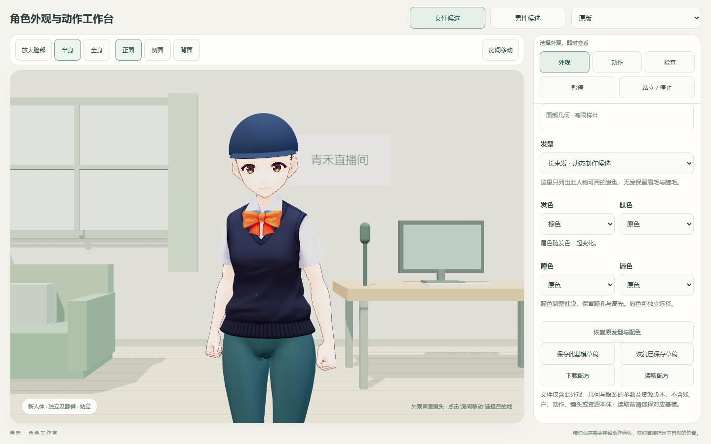
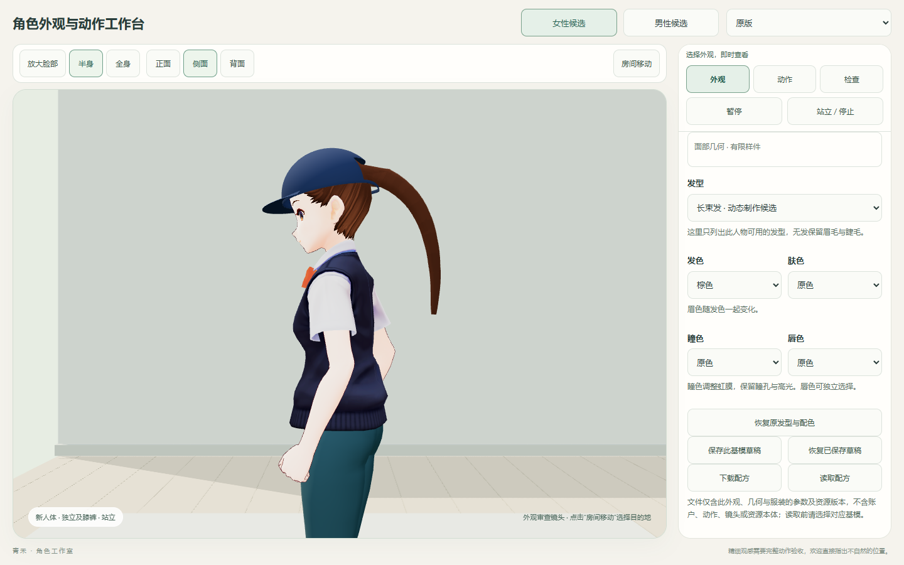
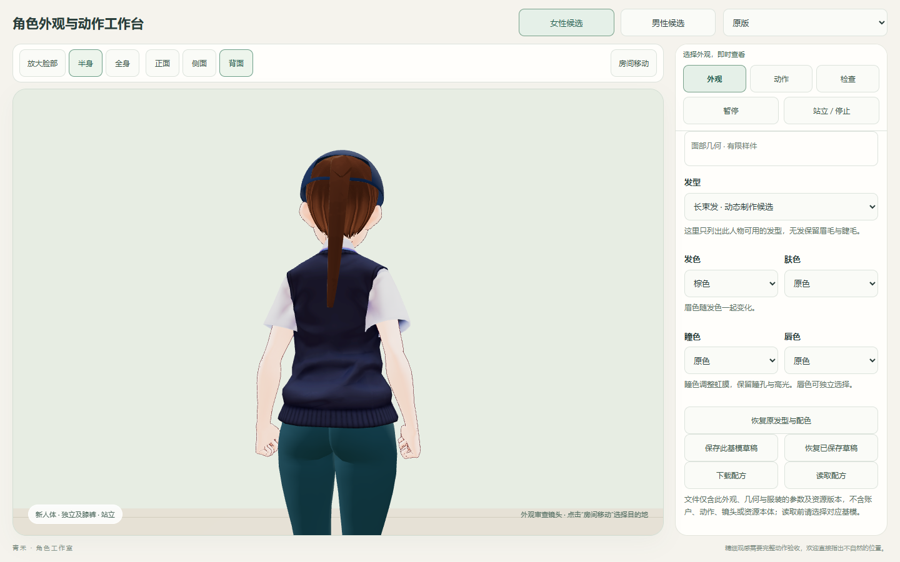
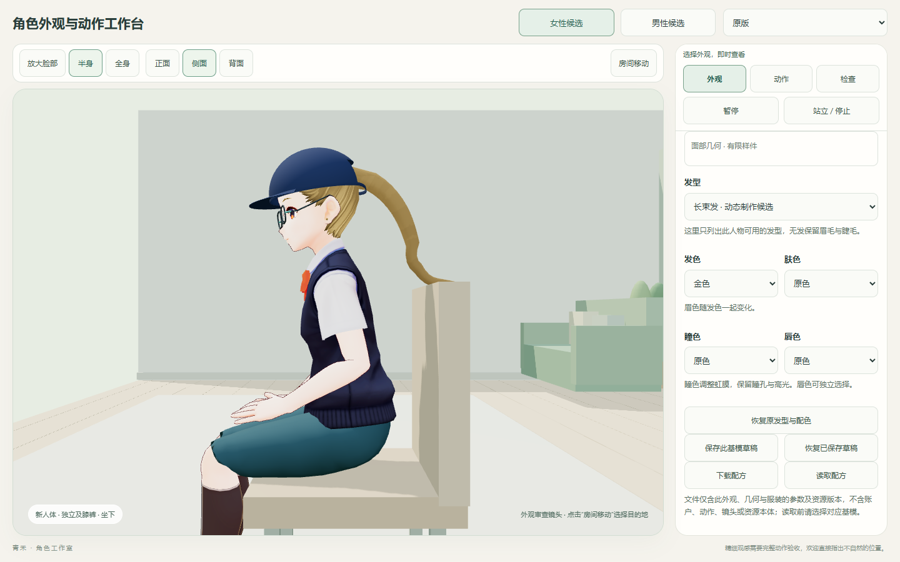
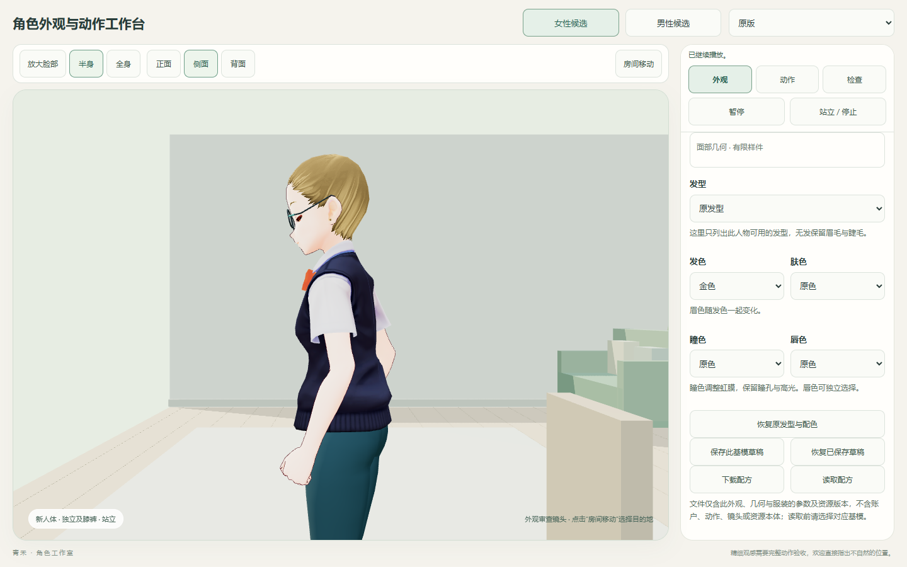
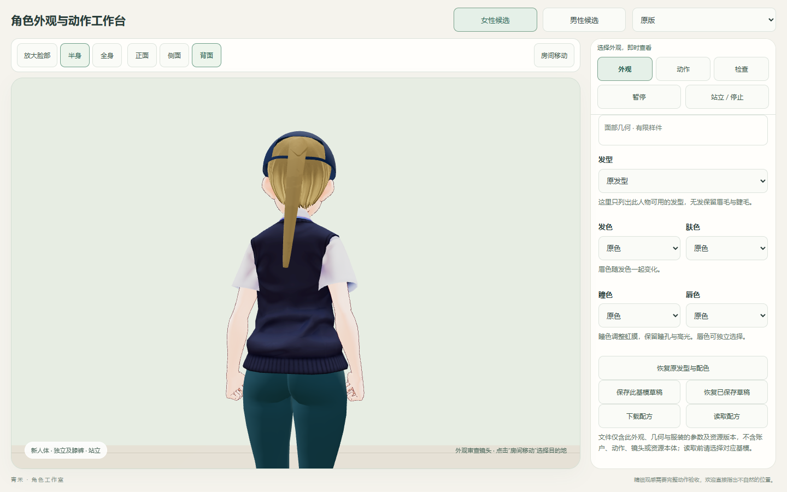
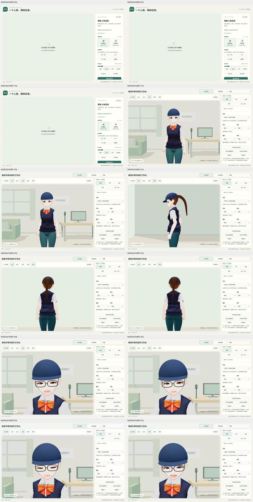
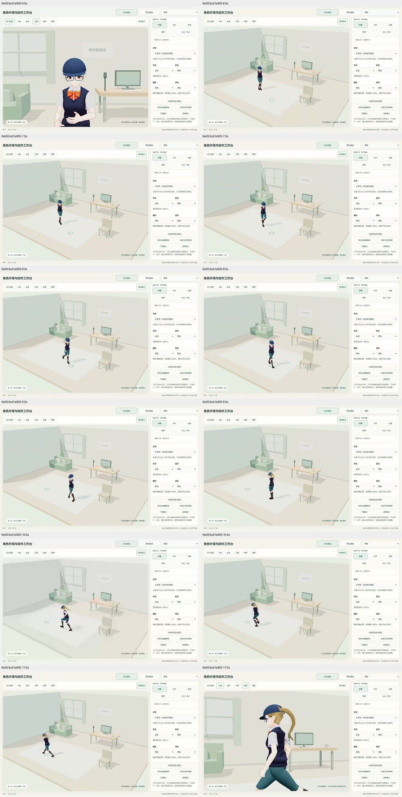
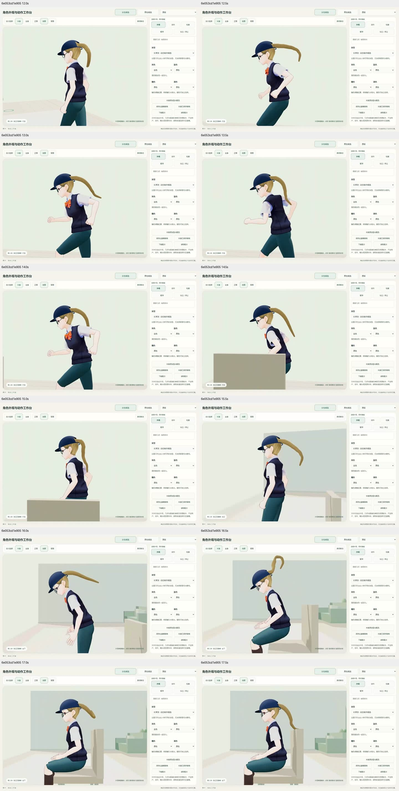
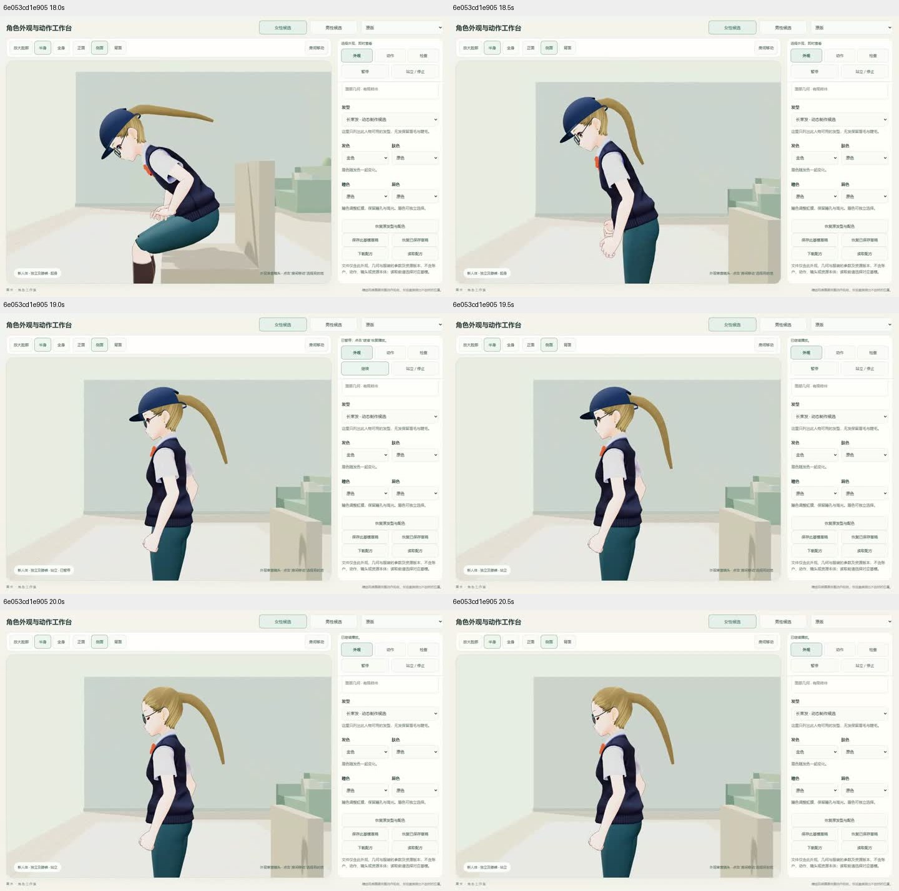

构建 6e053cd1e905 · 源码 b3d6bb3d197bcb6a7b8d7a718b77bf05bc59c5f5 · 观感待审。
这是帽子专属准入记录，使用原女性中性脸、精确 rootjoin-v2 长发和独立刚性帽子。页面保留帽子/马尾正侧背面、表情配饰、坐姿、卸载和新上下文恢复。
帽子状态由单独 hat-side-record.json 明确回放，当前保存的外观配方是 workbench-appearance-recipe-v6。它们的恢复路径和语义分别记录，不能把帽子状态当作原子 v7 外观字段。
开发机记录不提供性能结论，普通电脑和任意身体/发型兼容性尚未验证。
原始浏览器报告 · appearance-v7 配方 · 帽子 side-record · 文件 SHA 与抽帧索引 · 包装脚本






首个不兼容发型请求、缺失资源保留和重试均写入原始报告。帽子和马尾的连续动态、表情、视线及动作观感仍待主线审查。



